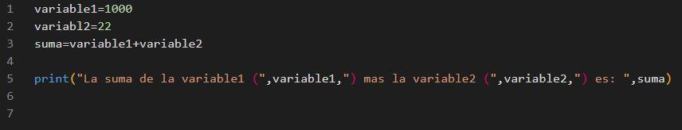
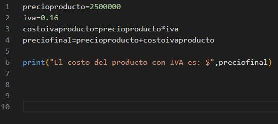
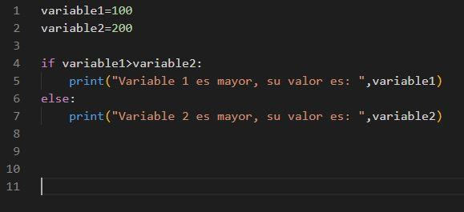
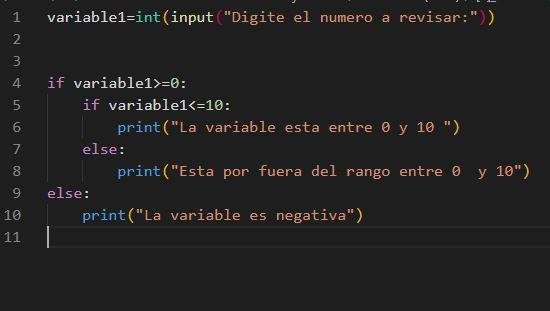
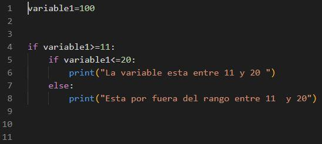
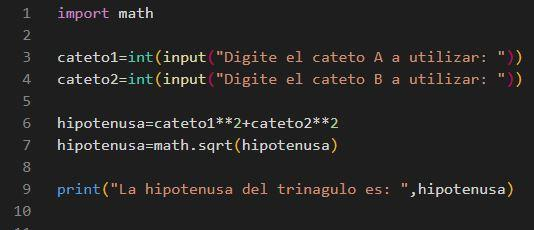

TECNOLOGÍA E INFORMATICA
PRIMER PERIODO
LENGUAJE DE PROGRAMACIÓN - PYTHON
Hay un lenguaje de programación de propósito general, cuya expansión y popularidad es relativamente reciente. Se trata de Python, una apuesta por la simplicidad, versatilidad y rapidez de desarrollo.
Python es un lenguaje de scripting independiente de plataforma y orientado a objetos, preparado para realizar cualquier tipo de programa, desde aplicaciones Windows a servidores de red o incluso, páginas web. Es un lenguaje interpretado, lo que significa que no se necesita compilar el código fuente para poder ejecutarlo, lo que ofrece ventajas como la rapidez de desarrollo e inconvenientes como una menor velocidad.
En los últimos años el lenguaje se ha hecho muy popular, gracias a varias razones como:
- La sencillez y velocidad con la que se crean los programas. Un programa en Python puede tener de 3 a 5 líneas de código menos que su equivalente en Java o C.
- La cantidad de plataformas en las que podemos desarrollar, como Unix, Windows, OS/2, Mac, Amiga y otros.
- Además, Python es gratuito, incluso para propósitos empresariales.
De dónde viene Python
El creador del lenguaje es un europeo llamado Guido Van Rossum. El objetivo de Guido era cubrir la necesidad de un lenguaje orientado a objetos de sencillo uso que sirviese para tratar diversas tareas dentro de la programación que habitualmente se hacía en Unix usando C.
El desarrollo de Python duró varios años, durante los que trabajó en diversas compañías de Estados Unidos. En el 2000 ya disponía de un producto bastante completo y un equipo de desarrollo con el que se había asociado incluso en proyectos empresariales.
Características del lenguaje
Propósito general
Se pueden crear todo tipo de programas. No es un lenguaje creado específicamente para la web, aunque entre sus posibilidades sí se encuentra el desarrollo de páginas.
Multiplataforma
Hay versiones disponibles de Python en muchos sistemas informáticos distintos. Originalmente se desarrolló para Unix, aunque cualquier sistema es compatible con el lenguaje siempre y cuando exista un intérprete programado para él.
Interpretado
Quiere decir que no se debe compilar el código antes de su ejecución. En realidad, sí que se realiza una compilación, pero esta se realiza de manera transparente para el programador. En ciertos casos, cuando se ejecuta por primera vez un código, se producen unos bytecodes que se guardan en el sistema y que sirven para acelerar la compilación implícita que realiza el intérprete cada vez que se ejecuta el mismo código.
Interactivo
Python dispone de un intérprete por línea de comandos en el que se pueden introducir sentencias. Cada sentencia se ejecuta y produce un resultado visible, que puede ayudarnos a entender mejor el lenguaje y probar los resultados de la ejecución de porciones de código rápidamente.
Orientado a Objetos
La programación orientada a objetos está soportada en Python y ofrece en muchos casos una manera sencilla de crear programas con componentes reutilizables.
Funciones y librerías
Dispone de muchas funciones incorporadas en el propio lenguaje, para el tratamiento de strings, números, archivos, etc. Además, existen muchas librerías que podemos importar en los programas para tratar temas específicos como la programación de ventanas o sistemas en red o cosas tan interesantes como crear archivos comprimidos en .zip.
Sintaxis clara
Por último, destacar que Python tiene una sintaxis muy visual, gracias a una notación identada (con márgenes) de obligado cumplimiento. En muchos lenguajes, para separar porciones de código, se utilizan elementos como las llaves o las palabras clave begin y end. Para separar las porciones de código en Python se debe tabular hacia dentro, colocando un margen al código que iría dentro de una función o un bucle. Esto ayuda a que todos los programadores adopten unas mismas notaciones y que los programas de cualquier persona tengan un aspecto muy similar.
EJEMPLOS
EJERCICIO 1

EJERCICIO 2

EJERCICIO 3

EJERCICIO 4

EJERCICIO 5

EJERCICIO 6

br